S09 · Level 3 — Tim virtual
Tinjau PR dengan tiga spesialis
Jalankan tiga reviewer read-only: Security, Performance dan Compliance. Manusia memvalidasi dan memublikasikan draf komentar.
Status latihan: Tiga profil meninjau diff #20 · ringkasan nyata terbit, tanpa komentar severity buatan. Ikuti langkah · Cek hasil · Langkah live · Ulangi dari awal.
Masalah yang dihadapi
Sari tidak bisa sendirian menguji performa, privasi, dan audit tiap PR.
Kerugian: Defect non-fungsional baru terlihat setelah rilis.
Masalah pada baseline
src/db.js
Lihat potongan atau catatan sumber
listOwn.all(userId).map(({ id }) => ownListItem.get(id, userId))Solusi dan alur
Jalankan tiga reviewer read-only: Security, Performance dan Compliance. Manusia memvalidasi dan memublikasikan draf komentar.
Alur kerja ringkas
Maintainer · Pilih PR dan diff
Hasil: Review bawaan Copilot dan tiga sesi spesialis punya sumber yang bisa dibaca.
Reviewer · Periksa kerahasiaan, query, dan audit
Hasil: Sebut severity hanya jika lokasi dan dampak terbukti. Catatan N+1 di baseline tidak otomatis regresi PR.
Tech Lead · Putuskan dari bukti
Hasil: Ringkasan fasilitator bukan approval dan bukan tiga komentar spesialis yang dipublikasikan.

- Draft PR membagikan diff kepada tiga reviewer.
- Security memeriksa privasi.
- Performance memeriksa query berulang.
- Compliance memeriksa audit trail.
- Bima membaca ringkasan dengan bukti masing-masing.
Lihat sumber Mermaid
flowchart TB
pr["Draft PR"] -->|Bagikan diff| sec["Security · privasi"]
pr -->|Bagikan diff| perf["Performance · N+1"]
pr -->|Bagikan diff| comp["Compliance · audit"]
sec -->|Drafkan bukti| summary["Ringkasan berisi severity"]
perf -->|Drafkan bukti| summary
comp -->|Drafkan bukti| summary
summary -->|Minta keputusan| lead["Bima · Tech Lead"]
classDef human fill:#e5eeff,stroke:#315699,color:#132d5b
classDef ai fill:#efe6ff,stroke:#7354a4,color:#382459
class lead human
class sec,perf,comp aiLangkah demo
Bandingkan diff stock
Cari recentClaimIds.map dan ownListItem.get di src/db.js. Untuk tujuh klaim, pembacaan per baris adalah risiko N+1. Cek output GET /claims tetap sama sebelum mengusulkan satu query.
git diff v0-baseline demo/pr-stock -- src/db.js Perbesar S09-local-result.png
Perbesar S09-local-result.pngOutput lokal yang dirender · bukan layar portal · Output pemeriksaan lokal S09: Performance · src/db.js di demo/pr-stock; Uji regresi GET /claims; Security dan Compliance. Jalankan tiga sudut review
Di draft PR S04 dan stock, buka reviewer di sidebar → Copilot bila tersedia. Jalankan security-reviewer, perf-reviewer, compliance-reviewer pada PR latihan; minta file/baris, severity, bukti dan saran tanpa mengubah kode.
Review PR latihan dari sudut peranmu. Sebut file, baris, severity, bukti dan saran. Jangan edit atau merge.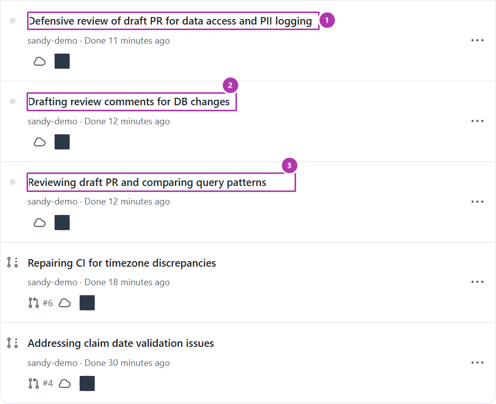
Perbesar S09-01-three-sessions-annotated.pngSumber GitHub · 1. Security: keterbatasan bukti akses dan logging, bukan temuan palsu. · 2. Compliance: periksa hasil audit, jangan nilai regulasi dari snapshot saja. · 3. Performance: buka draf N+1, lalu cek bukti pada diff. Baca hasil spesialis tanpa mengarang komentar
Di tab Agents buka tugas Performance, Security, dan Compliance. Performance memberi satu draf. Dua reviewer lainnya menjelaskan bahwa diff PR tidak terverifikasi di sesi. Status Done tidak berarti ada komentar di Conversation.
https://github.com/sandy-demo/AgenticSDLC/agents?author=sandy-demo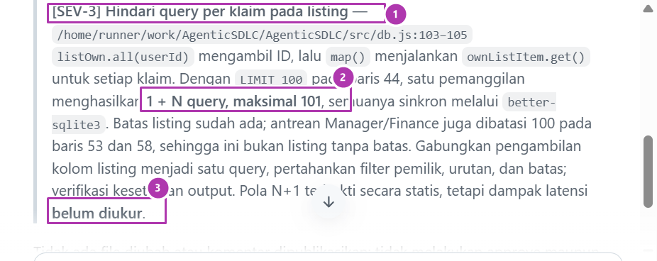
Perbesar S09-performance-finding-annotated.pngSumber GitHub · 1. Lihat judul [SEV-3] pada sesi, bukan komentar di PR. · 2. Baca pola 1 + N query, maksimum 101 dengan LIMIT 100. · 3. Latensinya belum diukur; pola sudah ada di baseline sehingga tidak terbukti sebagai regresi PR. Baca ringkasan yang benar-benar terbit
Di draft #2 buka Conversation, bukan di tab Agents. Bandingkan saran Copilot dengan ringkasan fasilitator. Ini catatan, bukan persetujuan untuk merge.
https://github.com/sandy-demo/AgenticSDLC/pull/2#issuecomment-7167398066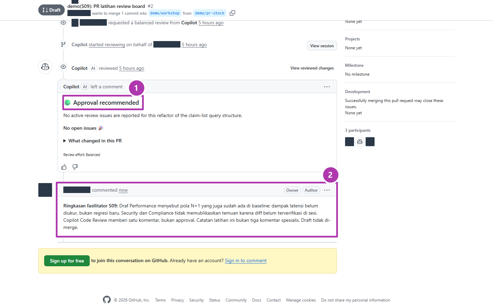
Perbesar S09-after-annotated.pngSumber GitHub · 1. Approval recommended adalah saran review bawaan, bukan approval manusia. · 2. Baca Ringkasan fasilitator S09 yang dipublikasikan. Tidak ada tiga komentar severity atau merge. Ulangi review pada diff yang sudah berfungsi
Buka retry S04 #20 dan baca review bawaan. Bandingkan saran Approval recommended dengan status review COMMENTED. Jangan mengada-adakan tiga komentar severity bila tidak ada dasar.
https://github.com/sandy-demo/AgenticSDLC/pull/20#pullrequestreview-6061587557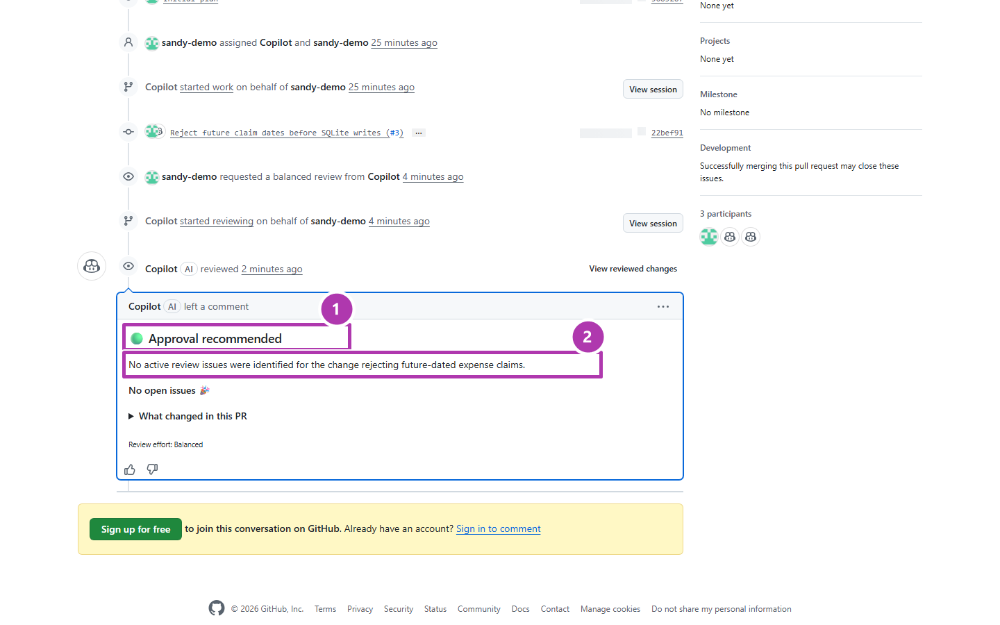
Perbesar S09-s04-review-annotated.pngSumber GitHub · 1. Approval recommended adalah komentar review Copilot, bukan persetujuan manusia. · 2. Review tidak melaporkan masalah aktif pada diff S04; ini bukan jaminan semua bug ditemukan. Baca hasil tiga reviewer pada diff yang ada
Tiga profil CLI membaca diff #20 yang sama tanpa menulis atau menjalankan tes. Komentar fasilitator mencantumkan apa yang diperiksa. Tidak ada regresi yang terverifikasi, jadi jangan membuat severity hanya untuk memenuhi kuota.
https://github.com/sandy-demo/AgenticSDLC/pull/20#issuecomment-7174548001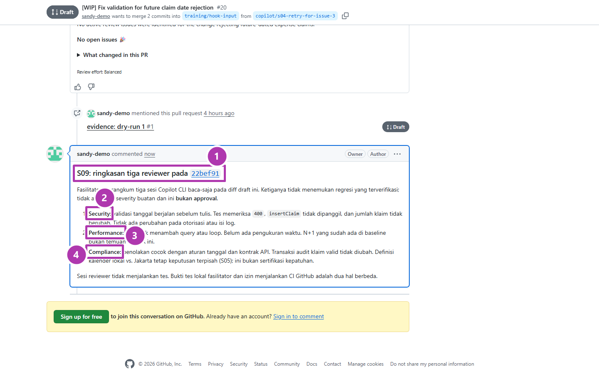
Perbesar S09-s04-panel-recap-annotated.pngSumber GitHub · 1. Cocokkan commit 22bef91. · 2. Security memeriksa validasi sebelum tulis. · 3. Performance membedakan query diff dan baseline. · 4. Compliance mencocokkan kontrak dan audit. Ini ringkasan fasilitator, bukan tiga komentar severity atau approval.


Cek hasil
Buka komentar pada #20 dan cocokkan tiga sudut review terhadap commit 22bef91. Bedakan pembacaan statis, tes, temuan terverifikasi, dan approval. Draft lama #2 tetap berguna untuk membahas N+1 baseline; tidak ada tiga temuan baru yang dipaksakan.
Bukti latihan terverifikasi
Langkah live
Prasyarat dan petunjuk pengambilan bukti
Bila spesialis tidak menemukan masalah yang terbukti, tidak perlu membuat tiga komentar hanya untuk mengejar jumlah. Ringkasan yang sudah terbit tetap bisa dipakai belajar.
S09-02-comments.pngDi Conversation atau Files changed buka komentar spesialis yang benar-benar dipublikasikan setelah verifikasi. Foto lokasi, severity dan bukti. Jika tidak ada komentar yang layak, catat keputusan “tidak diterbitkan” dan pakai ringkasan fasilitator; jangan membuat temuan palsu.
Sebelum dan sesudah
Geser pembanding atau gunakan tombol panah pada kontrol. Kedua gambar bisa dibuka terpisah.

| Bagian | Sebelum | Sesudah / target |
|---|---|---|
| Perilaku | Stock branch dengan satu query daftar ID ditambah query per klaim. | Uji lokal: output 7 klaim sama. Ada satu review Copilot; komentar spesialis belum dipublikasikan. PII/audit hanya ilustrasi. |
| Bukti visual | Ada tangkapan GitHub. | Ada tangkapan lokal. |
| Keputusan | Peserta membaca keadaan awal. | Manusia memeriksa hasil sebelum meneruskan. |
Manfaat
- Review manusia tetap memutuskan temuan mana yang menghalangi merge.
Bukti dan sumber
Template issue S09 · Data latihan dan pengukuran.
Bukti GitHub live
Tiga profil Copilot CLI baca-saja meninjau diff #20. Fasilitator menerbitkan ringkasan; tidak ada regresi baru terverifikasi atau approval manusia.
 Perbesar S09-before.png
Perbesar S09-before.png Perbesar S09-builtin-review.png
Perbesar S09-builtin-review.png
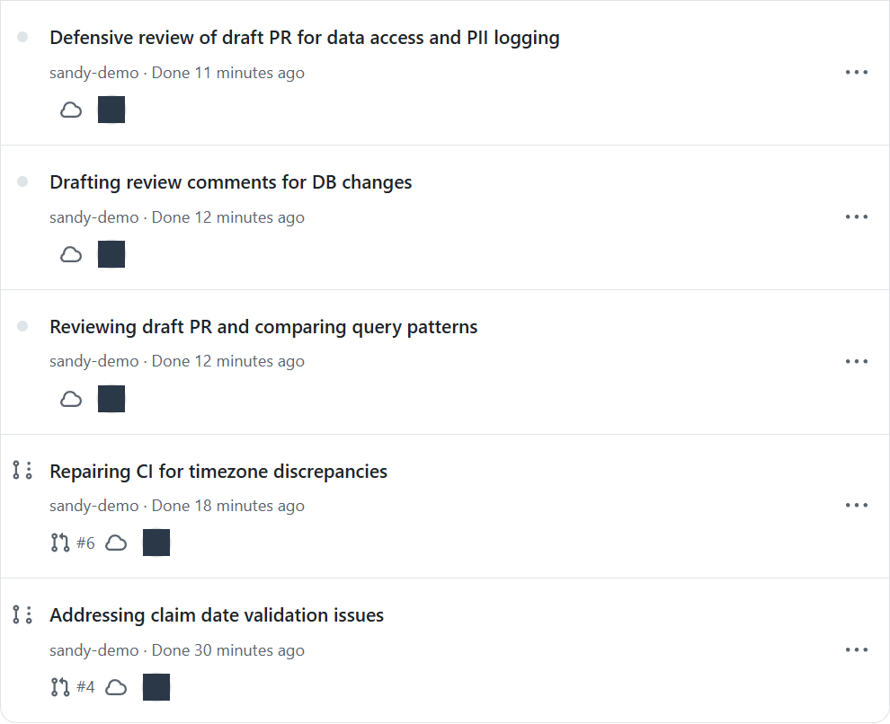
Perbesar S09-01-three-sessions.png
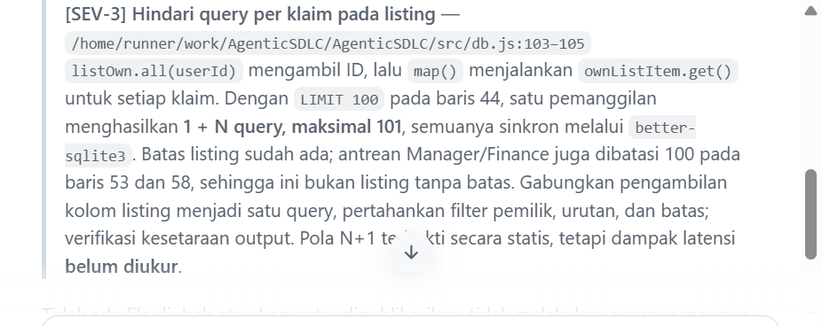
Perbesar S09-performance-finding.png
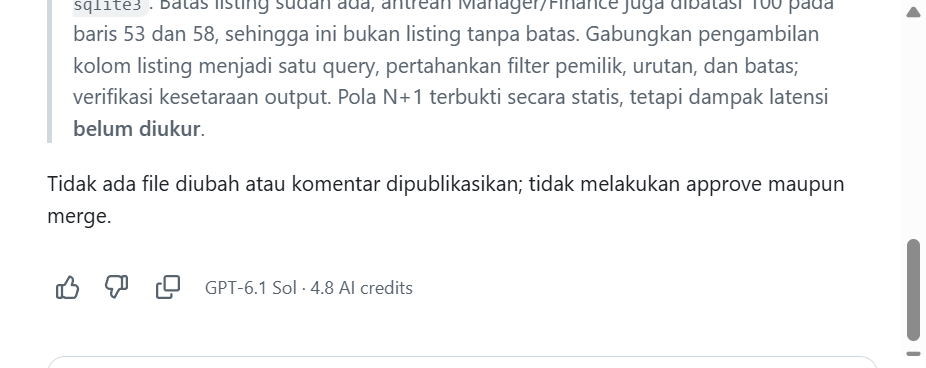
Perbesar S09-performance-task.png
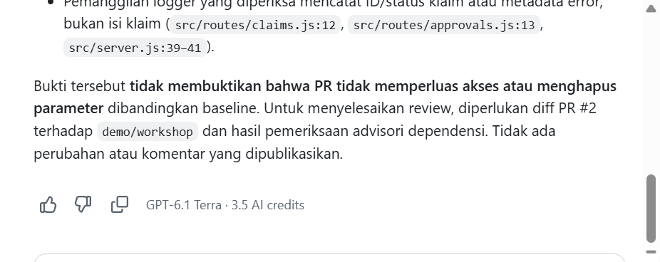
Perbesar S09-security-task.png
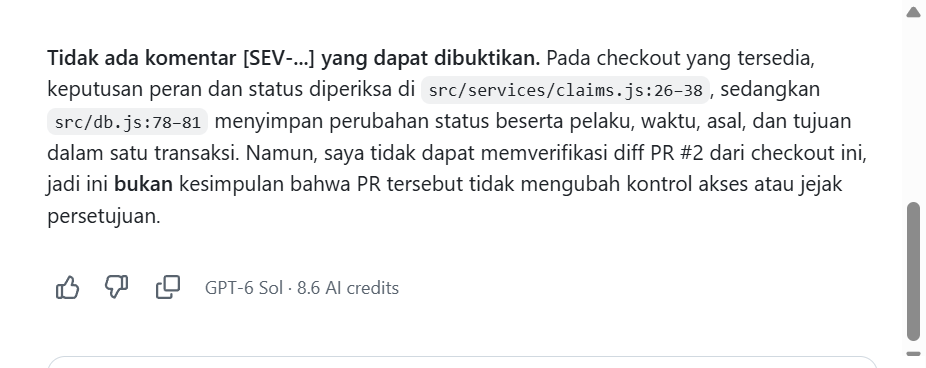
Perbesar S09-compliance-task.png
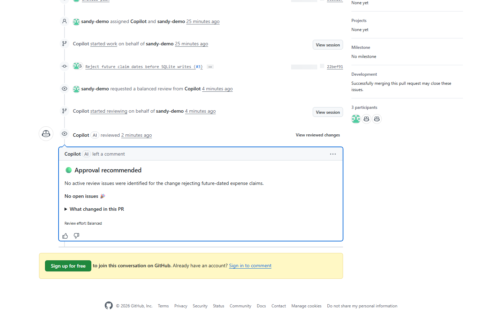
Perbesar S09-s04-review.png
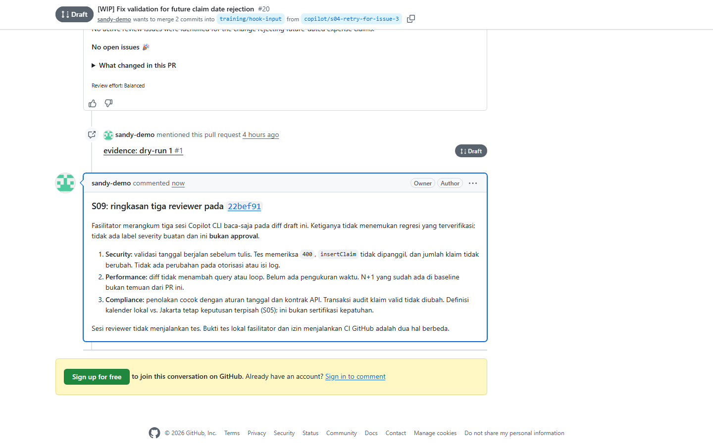
Perbesar S09-s04-panel-recap.png1 layar yang belum direkam
S09-02-comments.png
Ulangi latihan
Pemeriksaan tidak menulis kode atau data remote. Ulangi perintah di terminal baru bila sebelumnya mengubah variabel lingkungan.
npm run reset -- --fresh